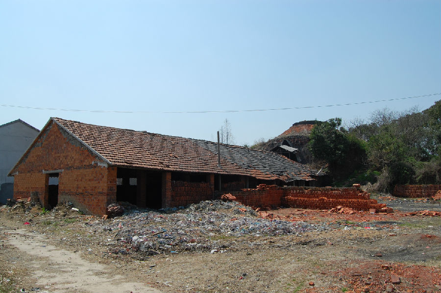
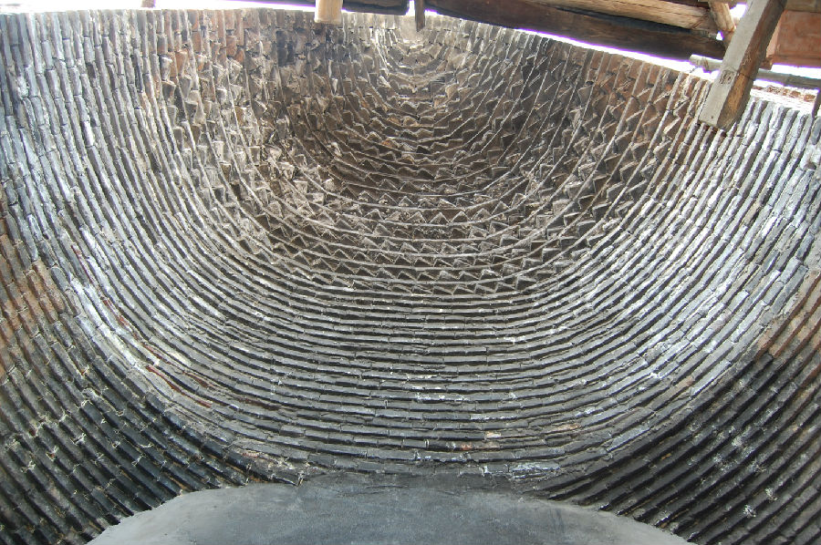

嘉兴市文物保护网 · 市级文物保护点 · 2020-11-09 · 原文


三星村砖瓦厂旧窑位于嘉兴市南湖区凤桥镇三星村8组南侧，凤余公路北侧的一块平地上。现存南北两个窑，据村主任介绍均为1970年建造，总占地762平方米。北窑现已拆毁，原窑口朝北，东西宽约10.5米，南北长约10.3米。南窑保存完整，窑口朝东，南北宽约7.7米，东西长约8.5米，窑高约8米，窑口向东延伸处搭建有窑棚，窑棚北建有存放砖瓦坯和产品的简棚。该窑始建之初烧砖瓦，后改只烧瓦，产品主要以青瓦、红瓦为主。随着全面禁止取土烧砖，此类旧窑在当地甚至嘉兴已罕见，作为生产传统建材的建筑，它将是传统建筑工艺的很好实证，具有较高的科学价值。2010年公布为嘉兴市文物保护点。